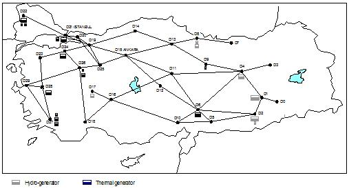

TESS is a simulation model of the Turkish electricity system. TESS is designed to simulate the welfare implications of alternative electricity distribution mechanisms. Currently, there are three mechanisms implemented in the model:
The model simulates hourly demand and generation schedules at each bus for the selected case, and calculates generators’ profits, distribution companies’ profits, consumer surplus, and total social welfare.

The model rests upon the DC Flow approximation method in which the reactive generation side is ignored. Using such a framework, we avoid getting stuck into the technical complexities of the electricity system, and focus on the impact of various market mechanisms on the system’s performance.
The model solves a non-linear Optimal Power Flow (OPF) problem for the Turkish electricity system. The OPF approach provides a wider framework than that the traditional Power Flow approach by ensuring node-level supply-demand equilibrium. OPF provides a basis for a synthesis of economics and engineering. In economics, sector-specific models only deal with measures of allocative or productive efficiency; these abstract models do not take sector specific technical conditions into consideration. OPF approach can be used to find out the optimal power flows, which satisfy both allocative and productive efficiency and, also do not violate technical conditions. Although the OPF approach requires a larger number of constraints and variables, efficient non-linear optimization algorithms like Newton–Raphson method, or most recent evolutionary techniques, overcome computational problems. Moreover, the OPF approach allows analyst to choose any type of objective function suitable for his analysis. One can choose social welfare maximization (which incorporates consumer and producer surpluses), or loss minimization as a goal.
For more information, see:
Bahçe, S. and Taymaz, E. (2008), “The Impact of Electricity Market Liberalization in Turkey: ‘Free Consumer’ vs Distributional Monopoly Cases”, Energy Economics (30): 1603-1624.
TESS is available for non-profit research purposes. If you would like to run simulations with TESS, please first read the TESS Manual.
The executable file, the source code and the input file are zipped together and available here for downloading: TESS Model.